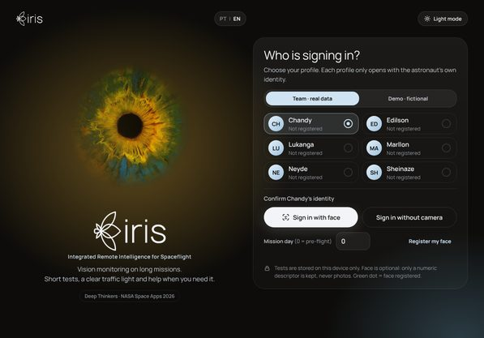
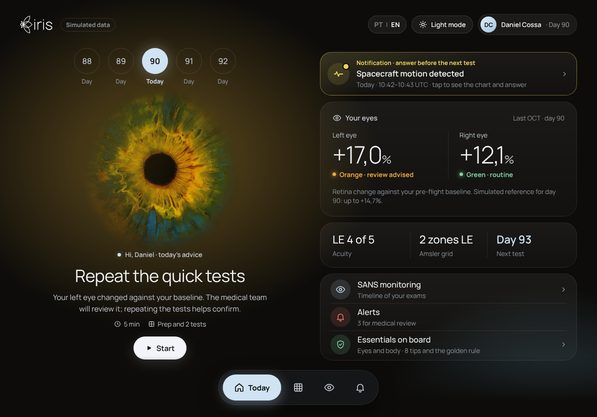
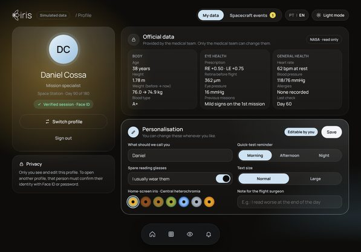
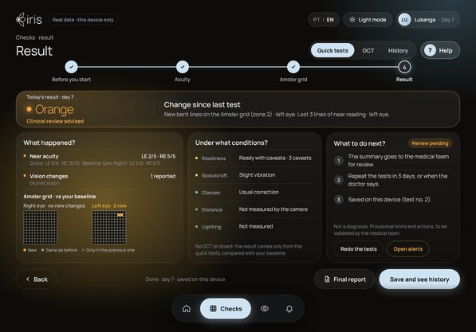
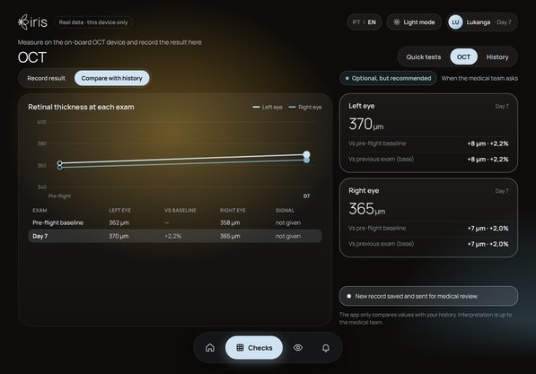
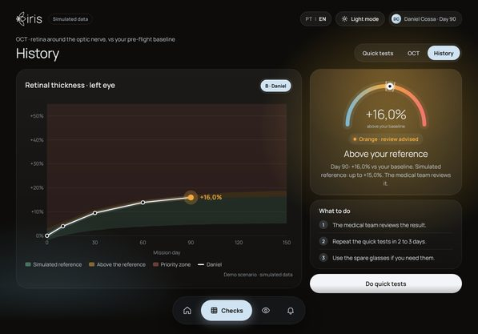
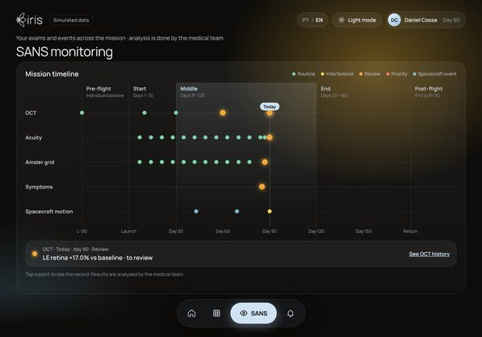
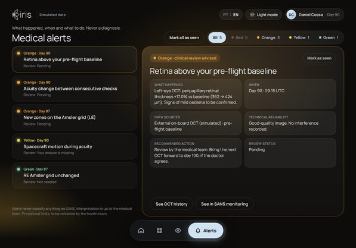
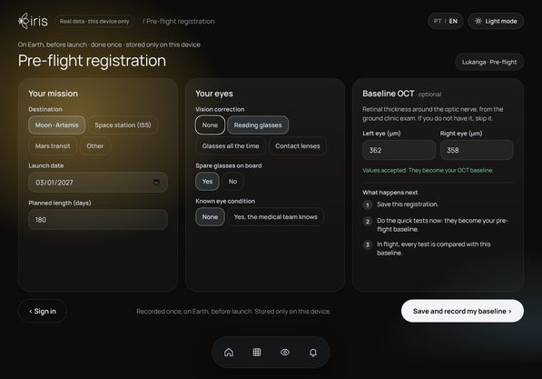

Deep Thinkers · NASA Space Apps 2026 · vision app prototype
all screens

1 · Sign inChoose the profile and sign in by face or from the list.
2 · TodayDaily advice and spacecraft-motion notification.
3 · ProfileRecords, personalisation and spacecraft events with a chart.
4 · Quick testsBefore you start, near acuity, Amsler grid and result.
5 · OCT (optional)Record the device values and compare with history.
6 · HistoryRetina trend against the pre-flight baseline.
7 · SANS monitoringTimeline of exams and mission events.
8 · Medical alertsAlerts on four levels, with detail and sending to the flight surgeon.
9 · Pre-flight registrationDay 0, on Earth: mission, eyes and baseline OCT, before the baseline tests.
How to use. Open this folder and double-click index.html, or start at Main.html. Works without internet. For the camera (distance and face sign-in), open the app with the file abrir_app in the project folder (http://localhost:8000); with a double-click everything works except the camera. Profile, theme and answers are kept in the browser: use Reset the demo to see the motion notification again and start over.
Marta = routine · Daniel = review advised · Sofia = clinical priority. Everything is simulated, with no link to NASA systems, and the app does not diagnose SANS.
Marta = routine · Daniel = review advised · Sofia = clinical priority. Everything is simulated, with no link to NASA systems, and the app does not diagnose SANS.